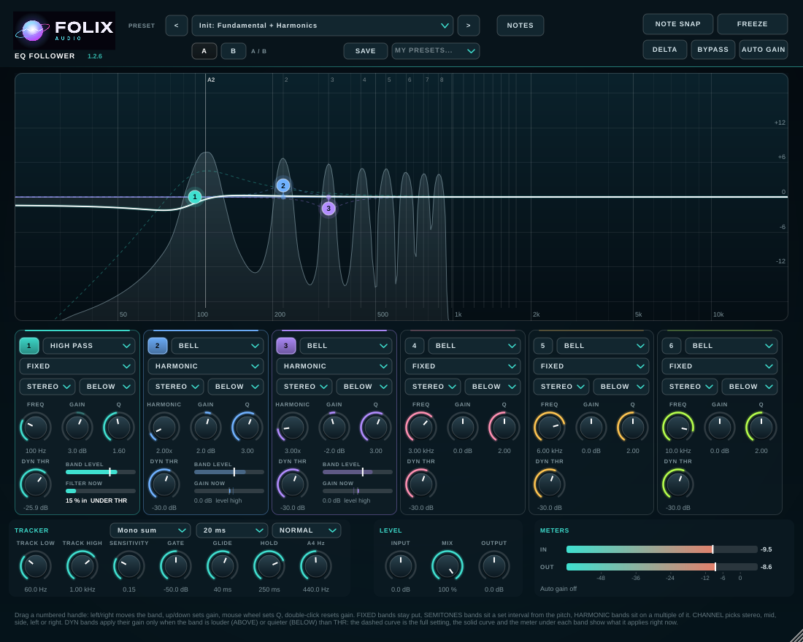
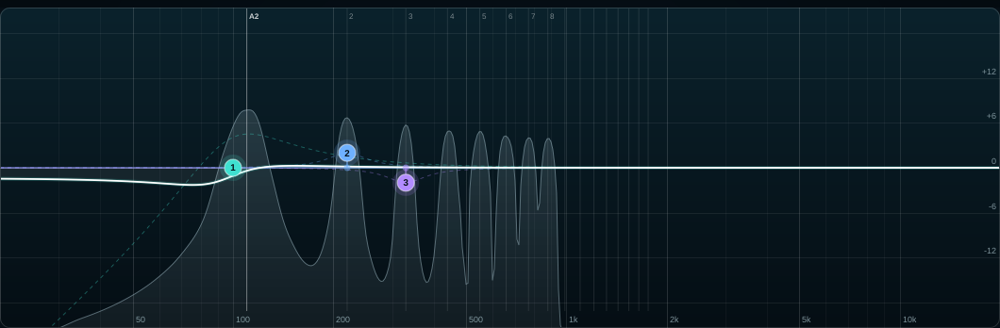

Folix EQ Follower
EQ bands that ride the note: boost the 2nd harmonic and it stays there as the pitch moves.

What it does
EQ Follower is an EQ that tracks pitch. Set any of its six bands to follow the note as a harmonic or a fixed interval in semitones, and the boost or cut moves with the melody instead of sitting on one frequency. Bands set to FIXED behave like a normal EQ, so you can mix both in one instance.
Track pitch from the input or a sidechain, FREEZE the tracked note, snap to the nearest note, or add lookahead. Each band can work in stereo, mid, side, left or right, and can be dynamic above or below a threshold. Pick ECO, NORMAL or HQ quality and save your own presets.
Key features
- Six bands with FIXED, SEMITONES and HARMONIC follow modes
- Sidechain pitch tracking, plus FREEZE, NOTE SNAP and LOOKAHEAD
- Per-band channel (Stereo / Mid / Side / L / R) and dynamic above or below
- ECO / NORMAL / HQ quality and saveable user presets

Specifications
| Version | 1.2 |
|---|---|
| Formats | VST3 |
| Platforms | Windows 10/11 (64-bit) now, Mac coming |
| System requirements | Windows 10/11 (64-bit) VST3 host |
| Installs as | EQFollower.vst3 |
Get the full version
Buy the full version of Folix EQ Follower — no demo mute. Secure checkout on Gumroad.
Buy Folix EQ Follower — $29.99